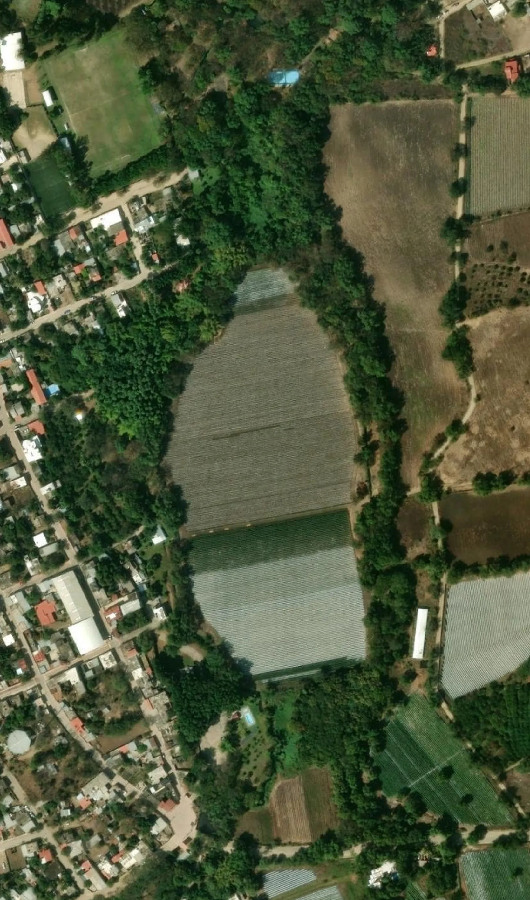
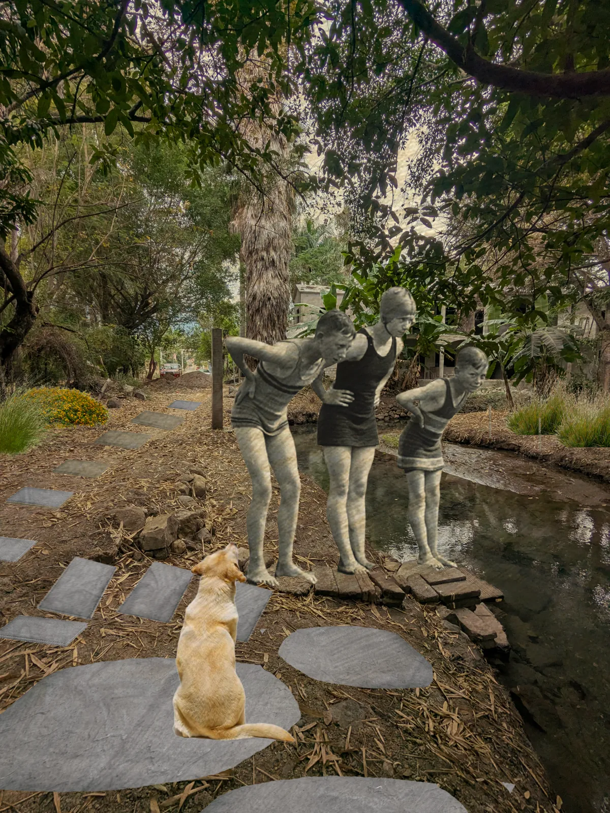
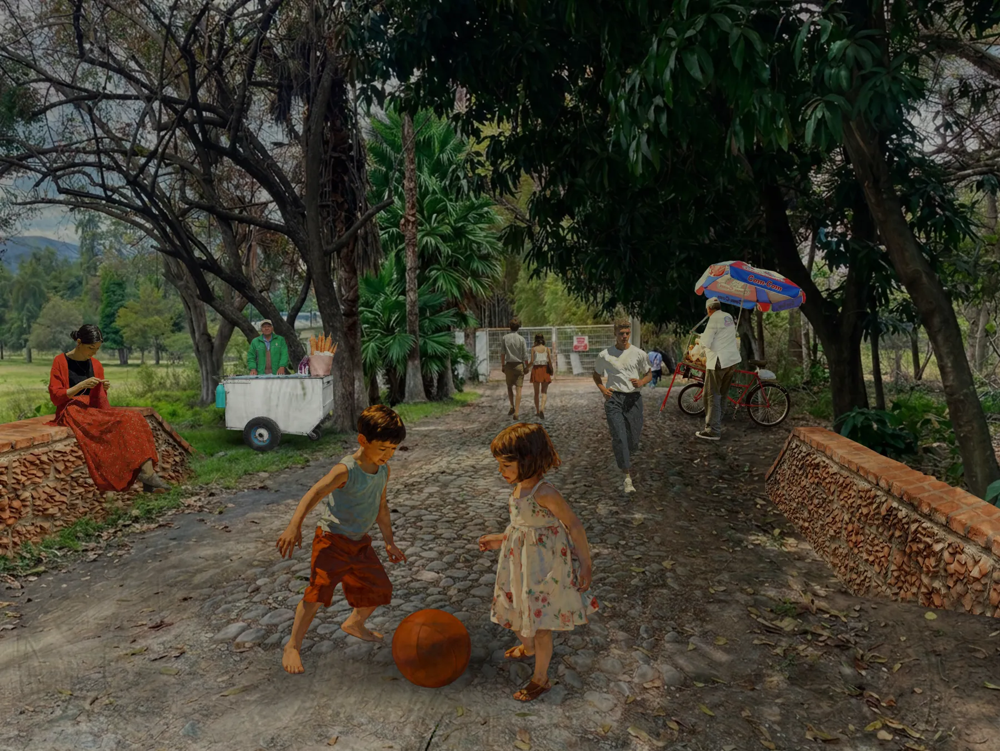
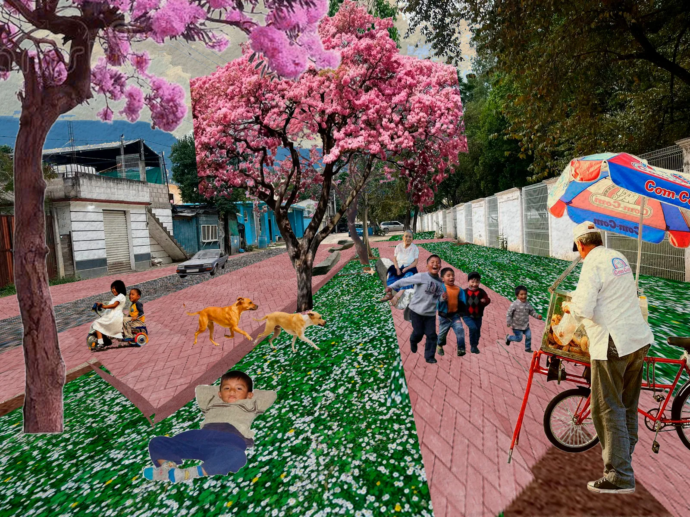
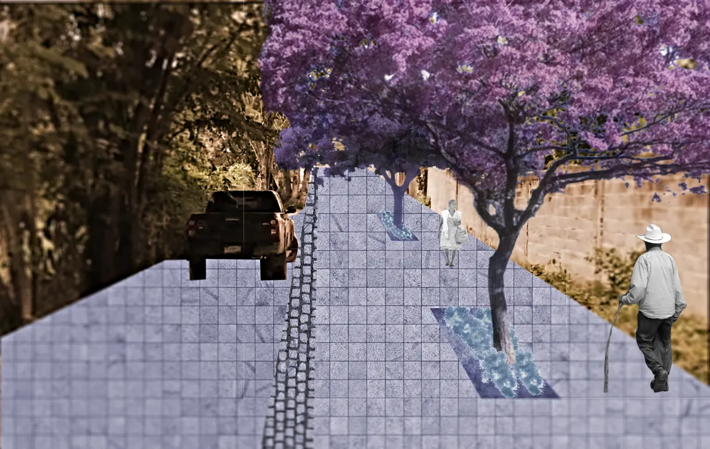
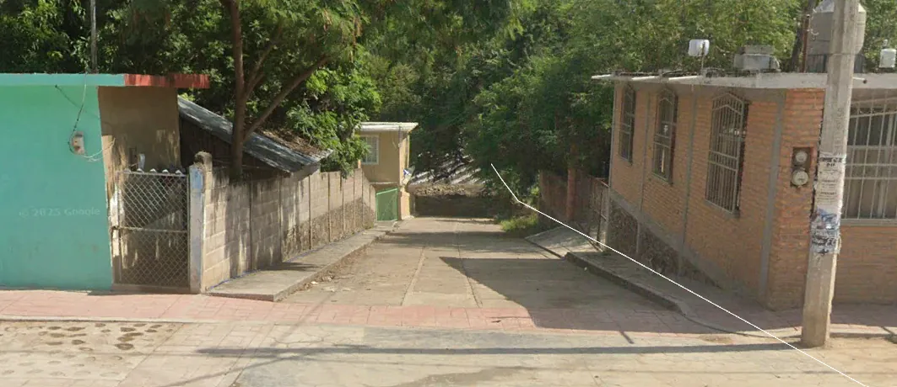
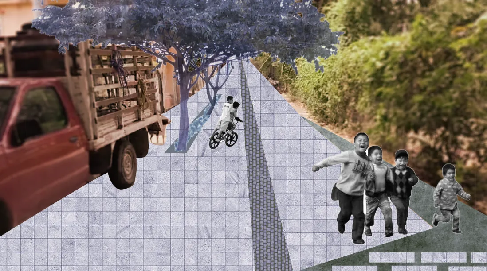
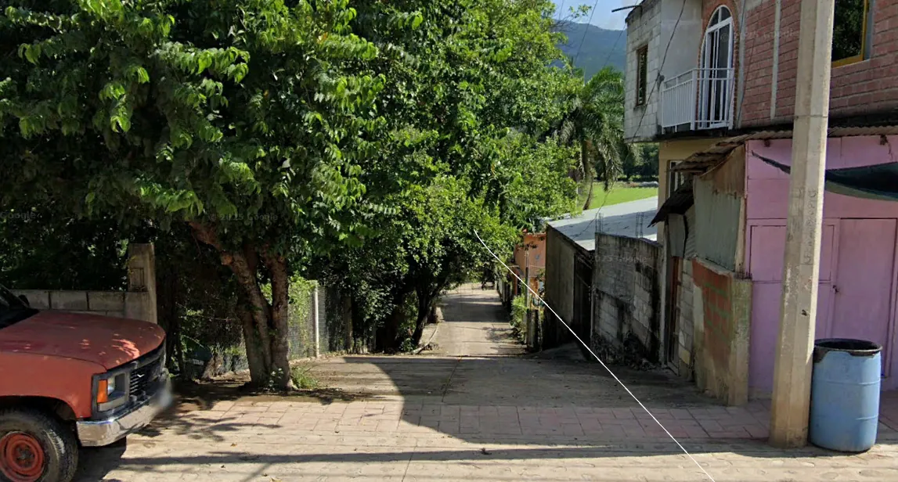
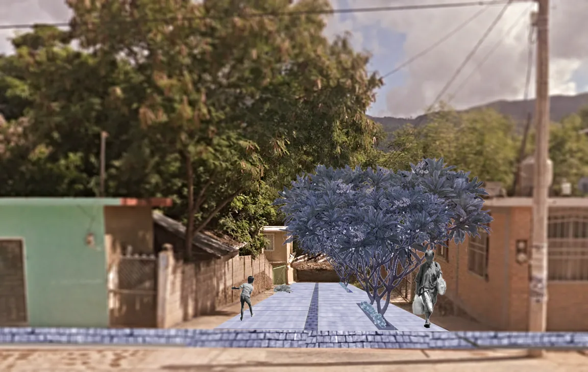
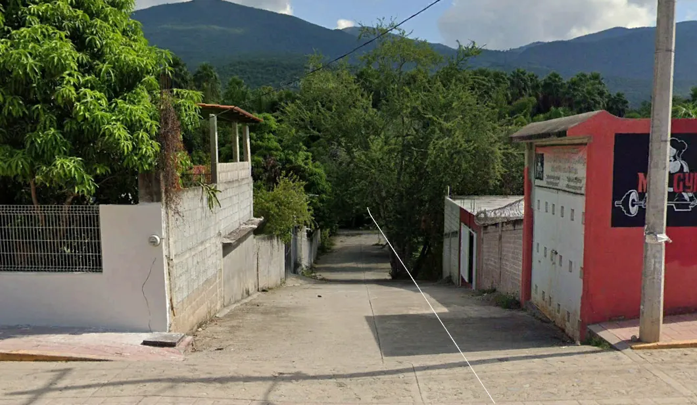

Concá Parcelas de riego Manantiales N↑
El lugar
Justo donde el pueblo toca las parcelas
La Acequia Madre nace en los manantiales, al norte, y baja bordeando el pueblo. De un lado quedan las casas; del otro, la tierra de riego. Esa orilla es el parque.
Hoy ya existe como costumbre: la gente camina por ahí, se baña en las pozas y cruza por sus dos pasos. Lo que no existe es la protección. Hay casas que descargan aguas residuales al cauce y la ribera corre el riesgo de ir quedando en manos privadas, barda por barda.
El proyecto busca tres cosas: conservar la ribera y el cauce, mantener el uso público del espacio, y que sirva de ejemplo para otros cauces dentro de los pueblos de la Reserva de la Biosfera Sierra Gorda.
La línea ámbar es el trazo del parque según el levantamiento del equipo. Imagen: Esri World Imagery, Maxar (febrero de 2026).
La idea
Tres parques en uno
El plan maestro lee la acequia en tres tramos, cada uno con su carácter, y los une con un mismo propósito: conservar, convivir y aprender.

El bosque
El tramo más húmedo y arbolado, junto a los manantiales. Aquí se camina sobre pasarelas para que el suelo y la vegetación se regeneren solos.

El corazón
Donde desembocan las calles del pueblo y están las pozas. Es el lugar de encuentro: andadores con sombra, gradas y un mirador hacia las parcelas.

La trama
Las calles que llegan al parque se vuelven andadores que filtran el agua de lluvia antes de que toque la acequia. El pueblo entero aprende a cuidar su agua.
Primera etapa · Tres calles y sendero del parque
Por dónde se empieza, y por qué ahí
Se eligió este tramo porque concentra el uso actual del parque y porque, al terminarse, se lee como una pieza completa aunque las siguientes etapas tarden en llegar. Empezar en otro punto dejaría la sensación de una obra a medias.
Caminar sin pisar el suelo
Una pasarela semielevada recorre el tramo más húmedo. Permite pasear sin compactar la tierra, y debajo de ella la vegetación se regenera por sí sola.
- Dos pozas que la gente ya usa, La Guayabita y La Pancita, se arreglan como lugares para estar, con losas para secarse
- Cerramientos de vara y alambre en vez de malla, que cierran el terreno vecino sin amurallar el parque
- Regeneración de la vegetación nativa de la ribera


Una calle que filtra el agua
La calle se vuelve andador de convivencia, al mismo nivel que la banqueta. El pavimento es permeable y los árboles se plantan en cajetes que también absorben la lluvia.


Sombra para llegar caminando
El mismo sistema de concreto y adoquín permeable, con arbolado para dar sombra todo el trayecto. La calle sigue sirviendo a sus vecinos, pero manda quien camina.


La calle que termina en mirador
Baja hasta una de las pozas por una escalera, con gradas y un mirador hacia el paisaje agrícola. Al final, un jardín de lluvia limpia el agua antes de que llegue a la acequia.
El plan completo
Ocho etapas que funcionan juntas
Cuatro etapas trabajan sobre las calles que conectan con el parque o con el predio de los manantiales; las otras cuatro, sobre el parque mismo. Las primeras preparan el diseño de las siguientes.
- Tres calles y sendero del parqueTres andadores, pasarelas y las dos pozasPresupuestada
- Andadores y equipamientoPor presupuestar
- Andadores del bosquecitoPor presupuestar
- El largo del árbol milenarioPor presupuestar
- Sendero del manantialPor presupuestar
- Recorrido del parque lineal, primer tramoPor presupuestar
- Recorrido del parque lineal, segundo tramoPor presupuestar
- Los PuentesPor presupuestar
Plano de etapas del plan maestro. Toca para ampliar.
Lo que ya se caminó
No empieza de cero
Llevamos varios años con los vecinos, los propietarios colindantes y el ejido. Esto es lo que ya está resuelto y lo que sigue abierto.
- ✓Diseño hecho con la genteEntrevistas, talleres comunitarios y un anteproyecto socializado con vecinos y ejidatarios.
- ✓El manantial El Abanico ya es protección ecológicaDejó de estar clasificado como zona urbana.
- ✓Dictamen de impacto ambientalObtenido ante SEMARNAT en 2024.
- ✓Dentro del plan municipalLa Acequia Madre de Concá es un área de actuación del PMDU aprobado en enero de 2026.
- ✓Plan maestro en ocho etapasTrabajado durante 2026 en talleres con estudiantes y docentes de Arquitectura de la UAQ.
- …Concesión de la zona federalEn trámite ante CONAGUA: cinco metros a cada lado del cauce.
- $Recursos para la primera etapaEs lo que falta. Para eso es esta página.
Cómo cuida el agua
El parque no es solo un paseo: es parte del sistema que alimenta a los manantiales. Las calles que bajan hacia la acequia dejan de mandarle el agua sucia de la lluvia. El pavimento permeable y los cajetes de los árboles la absorben; lo que escurre termina en un jardín de lluvia que la filtra antes de llegar al cauce.
Y a los vecinos
Las bardas de malla se sustituyen por cerramientos diseñados: de vara y alambre hacia el campo, de celosía de ladrillo hacia las casas. Dan al colindante la certeza de que su terreno queda cerrado al paso, y al parque, un borde cuidado en lugar de un muro.
Reglas que propone el plan para los predios vecinos
El plan maestro propone que las manzanas alrededor del parque conserven un mínimo de suelo sin pavimentar: 75% en las rurales, 50% en las mixtas y 35% en las urbanas, y cinco puntos más si colindan con el parque.
También propone que las construcciones se abran hacia el parque en vez de darle la espalda con bardas ciegas, que el agua de lluvia se infiltre dentro de cada predio, y que las alturas bajen conforme se acercan a la acequia. Son propuestas: se discuten con los vecinos y el municipio.
Cómo sumarte
Tres maneras de hacer que suceda
El diseño está, los permisos avanzan y la gente lo quiere. Lo que falta se puede poner de varias formas.
Financia una pieza
La primera etapa se puede tomar completa o por partes. Cada pieza funciona sola y tiene su presupuesto, que compartimos a quien lo pida.
- Uno de los tres andadores
- Los senderos del parque y las dos pozas
- La etapa completa
Aporta en especie
Mucho de lo que hace falta no es dinero. Son cosas que alguien del valle ya sabe hacer o producir.
- Árboles nativos: la etapa 1 pide veinte
- Bancas, botes y señalización
- Adoquín, piedra, vara y mano de obra
Abre una puerta
Hay programas y convocatorias donde este proyecto cabe, y trámites que se destraban con una llamada.
- Incluirlo en un programa de obra o inversión
- Acompañar la concesión de zona federal
- Presentarnos con quien decide
¿Platicamos?
Escríbenos y te mandamos el plan maestro, el presupuesto desglosado y los planos. Si quieres conocer el lugar, te llevamos a caminarlo.